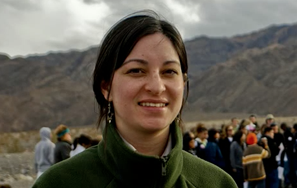
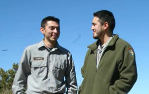

PRESERVATION
Ut enim ad minim veniam, quis nostrud exercitation ullamco laboris nisi ut aliquip ex ea commodo consequat. Duis aute irure dolor in reprehenderit in voluptate velit esse cillum dolore eu fugiat nulla pariatur.
EDUCATION
Ut enim ad minim veniam, quis nostrud exercitation ullamco laboris nisi ut aliquip ex ea commodo consequat. Duis aute irure dolor in reprehenderit in voluptate velit esse cillum dolore eu fugiat nulla pariatur.
NATURE
Ut enim ad minim veniam, quis nostrud exercitation ullamco laboris nisi ut aliquip ex ea commodo consequat. Duis aute irure dolor in reprehenderit in voluptate velit esse cillum dolore eu fugiat nulla pariatur.
Tim McElwain
Park Ranger Tim McElwain brings history alive at the Fort Davis National Historic Site in the Davis Mountains of West Texas. Learn more
Athena Cole
Cole works with other education specialists creating what she likes to call “kid-specific programs” for middle schools that she invites to come to Death Valley for field trips. Learn more
Yvonne Morales
Operating a visitor-friendly, clean, and safe national park is a complicated task that requires many different specialists with a broad range of training and experience. Learn more
Davila Brothers
Born in a small town just 30 minutes outside the south rim of the Grand Canyon, brothers Juan and Miguel Davila, ages 20 and 21, consider the park their home turf. They know it the way some know their own backyards. Learn more
Miriam Spruill
Miriam Spruill, Michelle Lewis and Judy Forte take a special interest in their work at the home of Dr. Martin Luther King, Jr. – a National Historic Site in Atlanta. Learn more
La'Keisha Harris

Wild animals, be they winged, water-bound or land-dwellers, are always nearby as Harris drives or walks around the park. Strolling along the Anhinga Trail, she often spots her favorite creature: the alligator. Learn more